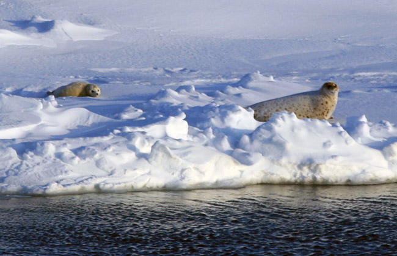

ΕΥΡΕΣΗ ΤΡΟΦΗΣ ΣΕ ΠΟΛΙΚΕΣ ΠΕΡΙΟΧΕΣ
Η επιβίωση σε ψυχρά κλίματα μπορεί να γίνει δυνατή εάν εφαρμόσουμε πολλές από τις τεχνικές και μεθόδους επιβιώσης που χρησιμοποιούν εδώ και αιώνες οι ιθαγενείς κάτοικοι των περιοχών αυτών. Η αναζήτηση και εξασφάλιση τροφής γίνεται με επιτυχία από τα μέλη νομαδικών φυλών που κατοικούν στην Αρκτική για χιλιάδες χρόνια.
Συγκεκριμένα, η φυλή των Ινουίτ (inuit) ακολουθώντας τον παραδοσιακό τρόπο ζωής τους ζει με κρέας προσθέτοντας μικρές ποσότητες από μούρα, ρίζες και φυτά όταν αυτά εμφανίζονται το καλοκαίρι. Η φώκια, ο τάρανδος και τα ψάρια αντιπροσωπεύουν το 90% την τροφής των, ενώ το 10% παρέχεται από πουλιά, τα ζώα των πολικών περιοχών και τους βίσωνες της Βορείου Αμερικής. Λόγω της έλλειψης καύσιμης ύλης και δεδομένου ότι οι σόμπες ελαίου που χρησιμοποιούσαν δεν παρείχαν επαρκή θερμότητα για μαγείρεμα, οι περισσότερες από τις τροφές τρωγόταν κρύες.
Οι Ινουίτ είναι επιδέξιοι κυνηγοί, καθώς καταφέρνουν να εξασφαλίσουν την απαραίτητη για αυτούς τροφή ακόμα και την περίοδο του χειμώνα. Ανάλογα με την εποχή, οι ιθαγενείς κυνηγούν διαφορετικά ζώα κάθε φορά προσαρμώζοντας την μέθοδο κυνηγιού τους στο εκάστοτε θήραμα κάθε φορά. Τα θαλάσσια θηλαστικά κυνηγιούνται κύριως την χειμερινή περίοδο όταν έχουν βγεί έξω στον πάγο. Παρόλα αυτά, το κυνήγι κάποιων θηλαστικών, όπως η φάλαινα γίνεται στην ανοικτή θάλασσα. Οι ιθαγενείς κυνηγάνε για να εξασφαλίσουν πέρα από την τροφή, το δέρμα των ζώων αλλά και χαυλιόδοντες σε κάποιες περιπτώσεις.
Κυνήγι
Μεγάλο μέρος της Αρκτικής είναι εκτεθειμένο ή ακάλυπτο, κάνοντας έτσι την αθέατη παρακολούθηση ή καταδίωξη ενός θηράματος δύσκολη. Επόμενως, οι παγίδες ή οι ενέδρες προσφέρουν την καλύτερη δυνατότητα για την σύλληψη θηραμάτων.
Ιστορικά, οι κάτοικοι της Αρκτικής χρησιμοποιούσαν διάφορα όπλα, μεταξύ των οποίων ήταν τα τόξα και τα καμάκια, στο άκρο των οποίων εφέρετο μια πέτρα ή ένα κόκκαλο φάλαινας ή ένα κέρατο ελαφιού ή βοδιού. Αν έχετε κάποιο όπλο, είναι καλύτερο να μένετε κρυμμένοι προς την κατεύθυνση του ανέμου και να παραμονεύετε, περιμένοντας το θήραμα σας. Να είστε αθόρυβοι, υπομονετικοί και να παρατηρείται, κατά προτίμηση, από υπήνεμη θέση. Αφήστε το θήραμα να έλθει προς τα εσάς. Πυροδοτείστε ή εκτοξεύστε το όπλο σας από καλλυμένη θέση. Τέλος, αν έχετε σκοπό να διανύσετε οποιαδήποτε απόσταση βεβαιωθείτε ότι έχετε επισημάνει την πορεία σας.
- Τις καλοκαιρινές περιόδους συνηθίζεται οι κάτοικοι των Αρκτικών περιοχών να κυνηγάνε και να ψαρεύουν στα ενδότερα της περιοχής αλλά και να κυνηγάνε φώκιες κατα μήκος των ακτών.
- Οι τάρανδοι είναι η πιο σημαντική πηγή τροφής κατά τους θερινούς μήνες.
- Πολύτιμο είναι επίσης και το δέρμα τους.
- Κατά το φθινόπωρο, οι τάρανδοι συγκεντρώνονται σε μεγάλες αγέλες, με σκοπό την μετακίνηση νότια προς περιοχές που είναι πιο πλούσιες σε τροφή κατά την χειμερινή περίοδο. Αποτέλεσμα αυτού, είναι να γίνονται εύκολη λεία για τον επίδοξο κυνηγό.
- Το κυνήγι και το ψάρεμα είναι δυσκολότερα την χειμερινή περίοδο καθώς παχύς πάγος και χιόνι καλύπτουν την Αρκτική, παρόλα αυτά υπάρχει η δυνατότητα εξεύρεσης τροφής.
- Οι φώκιες είναι η κύρια πηγή τροφής κατά την διάρκεια του χειμώνα.
- Επίσης, το δέρμα φώκιας και το λίπος χρησιμοποιούταν για την κατασκεύη ρούχων, σκηνών, καλυμμάτων για λέμβους και ως καύσιμο για θέρμανση και φωτισμό.
- Οι κυνηγοί φώκιας περιμένουν υπομονετικά - κάποιες φορές ακόμα και ώρες - κοντά στα σημεία αερισμού της φωκιάς και μόλις αναδυθεί για να αναπνεύσει, την σκοτώνουν με ένα αυτοσχέδιο καμάκι.
- Οι φώκιες γεννιούνται στην ξηρά κατά τους μήνες Μάϊο και Ιούνιο.
- Το κρέας της φώκιας έχει μια πολύ έντονη μυρωδιά, αλλά είναι πλήρως κατάλληλο για τροφή.
- Αποφύγετε το συκώτι, διότι είναι δηλητηριώδης λόγω της υψηλης περιεκτικότητας του σε βιταμίνη Α.